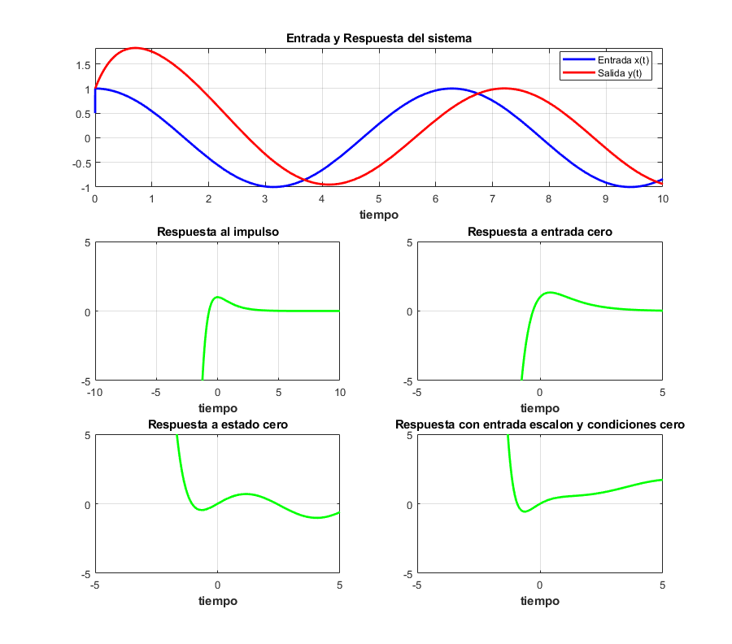

Práctica 6: Sistemas diferenciales
Grupo: 2TV1
Unidad de aprendizaje: Señales y Sistemas
Alumnos:
Aparicio Espinoza Octavio Joel
Gonzalez Plata Jose Enrique
Morales Rodriguez Diego Emilio
Morales Vazquez Pedro Benigno
Profesor: Dr. Rafael Martínez Martínez
Contents
- 1.- Muestra la función de transferencia del sistema
- 2.- Muestra la respuesta al impulso (simbólico, gráfica)
- 3.- Muestra la respuesta a entrada cero (simbólico, gráfica)
- 4.- Muestra la respuesta a estado cero (simbólico, gráfica)
- 5.- Muestra la respuesta total (simbólico, gráfica)
- 6.- La respuesta total al escalón con condiciones iniciales 0 (simbólico, gráfica)
- 7.- Usando subplot, depliega una figura con 5 gráficas
- Ejemplo usando funcion:
function SDlaplace(a,b,ciy,xi,t0) % a coeficientes de las derivadas de la salida menor a mayor [a_0, ..., a_n] % b coeficientes de las derivadas de la entrada menor a mayor [b_0, ..., b_m] % ciy condiciones iniciales de la salida de menor a mayor [y(0), y(0)^(n-1)] % xi función de entrada en terminos de la variable simbolica t previamente % declarada en el command window % t0 tiempo final para graficar la solucion
close all tam=size(a); tami=size(b); syms y(t) Y(s) x(t) X(s) Yy fp; syms edd edi edd=0; edi=0;
for i=1:tam(2) edd=edd+a(i)*s^(i-1)*Y(s); for k=1:i-1 edd=edd-a(i)*(s^(i-1-k)*ciy(k)); end end
for i=1:tami(2) edi=edi+b(i)*s^(i-1)*X(s); %for k=1:i-1 % edi=edi-b(i)*(s^(i-1-k)*cix(k)); %end end
mensaje('APLICAMOS TRANSFORMADA DE LAPLACE Y SUSTITUIMOS CONDICIONES INICIALES')
pretty(edd)
disp('=')
pretty(edi)
mensaje('DESPEJAMOS Y(s)')
edd=collect(edd,Y(s));
edd=subs(edd,Y(s),Yy);
eq1=edd==edi;
disp('Y(s)=')
edd=solve(eq1, Yy);
edd=collect(edd,X(s));
pretty(simplify(edd))
1.- Muestra la función de transferencia del sistema
FTrans=subs(edd,X(s),-X(s));
FTrans=(edd-FTrans)/(2*X(s));
mensaje('FUNCION DE TRANSFERENCIA. RECORDAR X(s)H(s)')
pretty(FTrans)
2.- Muestra la respuesta al impulso (simbólico, gráfica)
imp=ilaplace(FTrans);
mensaje('RESPUESTA AL IMPULSO. RECORDAR L{h(t)}=H(s)')
pretty(imp)
mensaje('SUSTITUIMOS LA TRANSFORMADA DE LA ENTRADA')
edd=subs(edd,X(s), laplace(xi));
pretty(edd)
3.- Muestra la respuesta a entrada cero (simbólico, gráfica)
mensaje('REPUESTA A ENTRADA CERO')
REnt0=ilaplace(partfrac(edd-FTrans*laplace(xi)));
pretty(REnt0)
4.- Muestra la respuesta a estado cero (simbólico, gráfica)
mensaje('RESPUESTA A ESTADO CERO. TRANSFORMADA INVERSA DE X(s)H(s)')
REst0=ilaplace(partfrac(FTrans*laplace(xi)));
pretty(REst0)
5.- Muestra la respuesta total (simbólico, gráfica)
mensaje('LA SOLUCION ES LA SUMA DE LAS RESPUESTAS ENTRADA Y ESTADO CERO') disp('y(t)=') y(t)=REnt0+REst0; pretty(y(t))
6.- La respuesta total al escalón con condiciones iniciales 0 (simbólico, gráfica)
for i=1:tam(2) edd=edd+a(i)*s^(i-1)*Y(s); end
xi2=heaviside(t); edi=subs(edi,X(s), laplace(xi2)); edd=collect(edd,Y(s)); edd=subs(edd,Y(s),Yy); eq1=edd==edi; edd=solve(eq1, Yy); ye(t)=ilaplace(edd);
7.- Usando subplot, depliega una figura con 5 gráficas
dy(t)=diff(y,t); ddy(t)=diff(dy,t); figure (1) hFig = figure(1); set(hFig, 'Position', [0 0 900 900]) axes1 = axes('Parent',hFig,'FontWeight','bold','FontSize',11); tiempo=0:0.01:t0; subplot(3,2,[1,2]) fplot(xi,[0, t0],'b','LineWidth',2)
hold on fplot(y,[0,t0],'r','LineWidth',2)
legend('Entrada x(t)','Salida y(t)','Location','Best') xlabel('tiempo','FontWeight','bold','FontSize',11) title('Entrada y Respuesta del sistema','FontWeight','bold','FontSize',11) grid on subplot(3,2,3) fplot(imp,[-t0 t0],'g','LineWidth',2) axis([-t0 t0 -5 5])
hold on title('Respuesta al impulso','FontWeight','bold','FontSize',11) xlabel('tiempo','FontWeight','bold','FontSize',11) grid on
subplot(3,2,4) fplot(REnt0,[-t0 t0],'g','LineWidth',2) axis([-t0/2 t0/2 -t0/2 t0/2])
hold on title('Respuesta a entrada cero','FontWeight','bold','FontSize',11) xlabel('tiempo','FontWeight','bold','FontSize',11) grid on
subplot(3,2,5) fplot(REst0,[-t0 t0],'g','LineWidth',2) axis([-t0/2 t0/2 -t0/2 t0/2])
hold on title('Respuesta a estado cero','FontWeight','bold','FontSize',11) vxlabel('tiempo','FontWeight','bold','FontSize',11) grid on
subplot(3,2,6) fplot(ye,[-t0 t0],'g','LineWidth',2) axis([-t0/2 t0/2 -t0/2 t0/2])
hold on% title('Respuesta con entrada escalon y condiciones cero','FontWeight','bold','FontSize',11) xlabel('tiempo','FontWeight','bold','FontSize',11) grid on end
function mensaje(texto) disp( ' ') disp(texto) disp( ' ') end
Ejemplo usando funcion:
syms t
SDlaplace([2 3 1],[3 1],[1 2],cos(t)*heaviside(t),10)
APLICAMOS TRANSFORMADA DE LAPLACE Y SUSTITUIMOS CONDICIONES INICIALES
2
2 Y(s) - s + 3 s Y(s) + s Y(s) - 5
=
3 X(s) + s X(s)
DESPEJAMOS Y(s)
Y(s)=
s + 5 X(s) (s + 3)
------------ + ------------
2 2
s + 3 s + 2 s + 3 s + 2
FUNCION DE TRANSFERENCIA. RECORDAR X(s)H(s)
s + 3
------------
2
s + 3 s + 2
RESPUESTA AL IMPULSO. RECORDAR L{h(t)}=H(s)
2 exp(-t) - exp(-2 t)
SUSTITUIMOS LA TRANSFORMADA DE LA ENTRADA
s + 5 s (s + 3)
------------ + -----------------------
2 2 2
s + 3 s + 2 (s + 1) (s + 3 s + 2)
REPUESTA A ENTRADA CERO
4 exp(-t) - exp(-2 t) 3
RESPUESTA A ESTADO CERO. TRANSFORMADA INVERSA DE X(s)H(s)
exp(-2 t) 2 3 cos(t) 4 sin(t)
----------- - exp(-t) + -------- + --------
5 5 5
LA SOLUCION ES LA SUMA DE LAS RESPUESTAS ENTRADA Y ESTADO CERO
y(t)=
exp(-2 t) 13 3 cos(t) 4 sin(t)
3 exp(-t) - ------------ + -------- + --------
5 5 5
